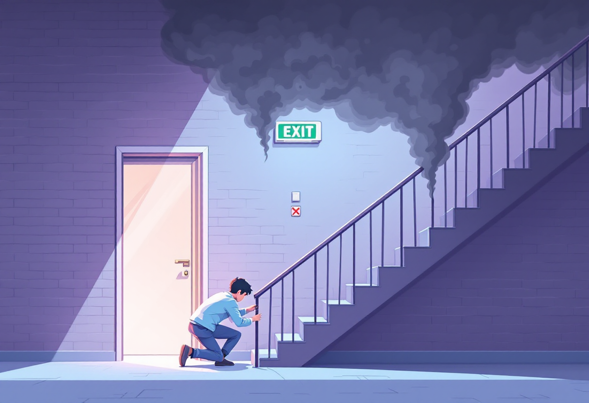
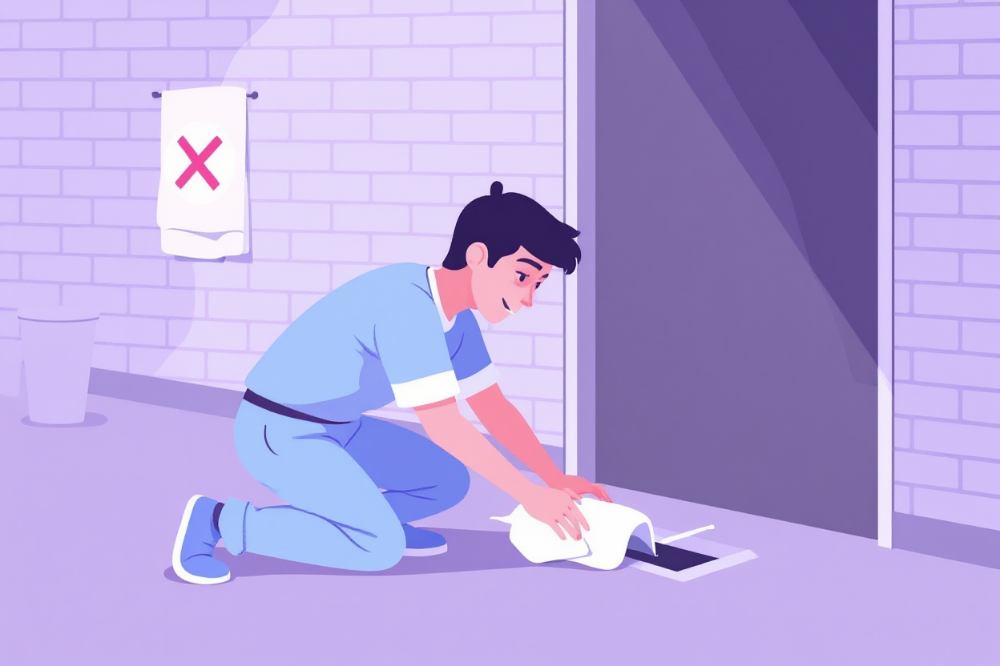
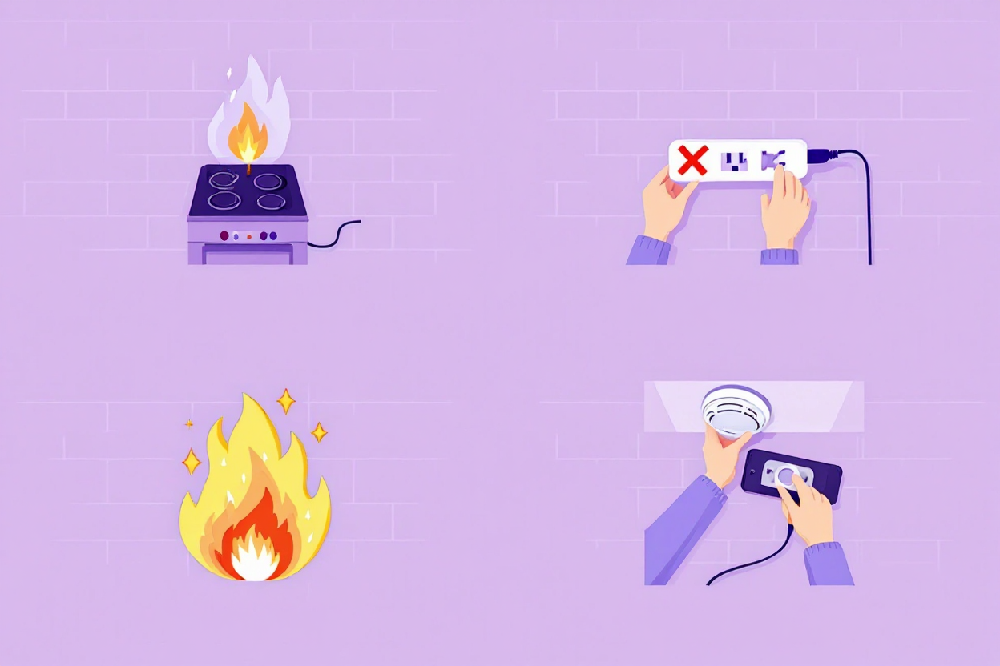

Пожежна безпека
Що робити при пожежі вдома або в під'їзді — чіткий алгоритм дій без паніки.
Перші дії при виявленні пожежі
Перші 30 секунд визначають, наскільки безпечно тобі вдасться вийти.
- Одразу зателефонуй 101 (пожежна) або 112 (єдина екстрена).
- Якщо вогонь невеликий і є вогнегасник — гаси від краю до центру.
- Якщо вогонь поширюється — не гаси сам, евакуйся.
- Попередь сусідів — постукай у двері по дорозі виходу.

Евакуація: як діяти правильно
При евакуації з будівлі кожна дія важлива. Дим убиває швидше за вогонь.
- Перед виходом із кімнати: доторкнись до дверей тильною стороною долоні — якщо гаряча, не відчиняй.
- Закрий за собою двері — це уповільнює поширення вогню.
- У диму — нахились нижче, повзи до виходу (чистіше повітря внизу).
- Ніколи не використовуй ліфт під час пожежі.

Якщо не можеш евакуюватись
Якщо вихід заблоковано — не панікуй. Є дії, які допоможуть протриматись до приїзду рятувальників.
- Закрий двері і закладай щілини мокрими рушниками або одягом.
- Відійди до вікна і подавай сигнали: кричи, махай тканиною.
- Відчини вікно лише якщо немає диму ззовні.
- Телефонуй 101 і повідомляй свій точний поверх і кімнату.

Профілактика: як не допустити пожежі
Більшість пожеж у житлових будинках можна попередити.
- Не залишай включену плиту, праску, обігрівач без нагляду.
- Встанови димовий датчик — він рятує життя, коштує 300–500 грн.
- Не перевантажуй розетки: один потужний прилад — одна розетка.
- Знай, де знаходиться вогнегасник у твоєму будинку чи квартирі.